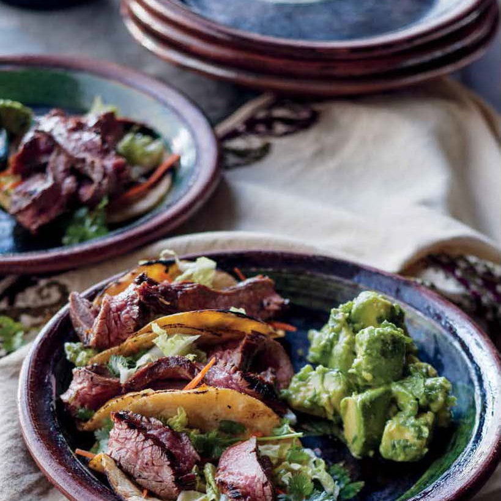

Korean Steak Tacos

A Platter of Korean Steak Tacos, Served with a side of Guacamole.
Korean food trucks of Los Angeles, made at home. The marinade for the steak is to die for. I guarantee you'll want to try it with Korean-style short ribs, pork tenderloin, and grilled chicken.
A little planning and prep a day ahead is a great way to save time on hurried weeknights. This steak gets even better with an overnight marinade, so you could marinate it on Monday, and it's ready to grill on Tuesday night. If you're doing it all on the same night, use the marinating time to multitask—prep your vegetables and whip up the guacamole. You'll be surprised how quickly it comes together.
Ingredients
Steak
- 1/2 cup finely chopped fresh cilantro
- 1/4 cup packed dark brown sugar
- 3 tablespoons canola oil
- 3 tablespoons soy sauce
- 1 tablespoon toasted sesame oil
- 2 large garlic cloves, minced
- 1 jalapeño pepper, seeded and finely chopped
- 1 teaspoon freshly ground black pepper
- 1 teaspoon ground coriander
- One 2-pound flank steak (about 1 1/2 inches thick), fat trimmed
Tacos
- 1/2 head napa cabbage, halved lengthwise and shredded crosswise (about 3 cups)
- 1 large carrot, cut into 2-inch-long matchstick-size strips
- 8 scallions (white and green parts), thinly sliced on a sharp diagonal
- 1/2 cup lightly packed fresh cilantro sprigs
- Twelve 6-inch corn tortillas
Guacamole
- 3 firm but ripe Hass avocados, halved, pitted, peeled, and cut into 1/2-inch pieces
- 3 tablespoons finely chopped fresh cilantro
- 2 tablespoons fresh lime juice
- 1/2 jalapeño pepper, seeded and finely chopped
- 1 garlic clove, finely chopped
- 1/4 teaspoon ground cumin
- Kosher salt
Directions
- To marinate the steak: In a large baking dish, whisk the cilantro, brown sugar, canola oil, soy sauce, sesame oil, garlic, jalapeños, black pepper, and coriander to blend well. Reserve 1/4 cup of the mixture in a small bowl for serving. Place the steak in the remaining marinade and turn to coat. Marinate for at least 20 minutes at room temperature, or cover and refrigerate for up to 1 day, turning occasionally. Cover and refrigerate the reserved marinade.
- Prepare an outdoor grill for medium-high cooking over direct heat.
- Remove the steak from the marinade (discard the marinade) and grill, turning halfway through cooking, for a total of about 10 minutes, until the meat feels only slightly resilient when pressed with a fingertip for medium-rare. Transfer the steak to a cutting board and let stand for 5 to 10 minutes.
- Meanwhile, prepare the tacos: In a large bowl, toss the cabbage, carrots, scallions, and cilantro together.
- For the Guacamole: In another large bowl, gently fold the avocados, cilantro, lime juice, jalapeños, garlic, and cumin together. Season to taste with salt.
- Heat the tortillas on the grill, turning occasionally, for about 1 minute, or until hot. Transfer to a serving bowl and cover to keep warm.
- To serve: Cut the steak across the grain into 1/4-inch-thick slices. Transfer the steak slices and any carving juices to a platter. Serve the steak with the reserved marinade, tortillas, cabbage mixture, and guacamole. Let each guest fill two tortillas with some steak and cabbage mixture and top with some of the marinade and guacamole.